Developmental Genetics

"Flies are flies, and mice are people"
--Cliff Kentros
Flies are people too
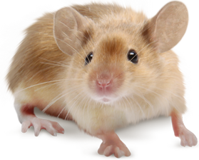
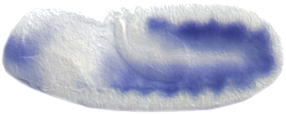
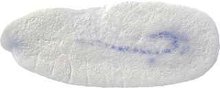
Key point: The cycle of transcriptional control followed by intercellular signaling cascades and chromatin remodeling is reused throughout development.
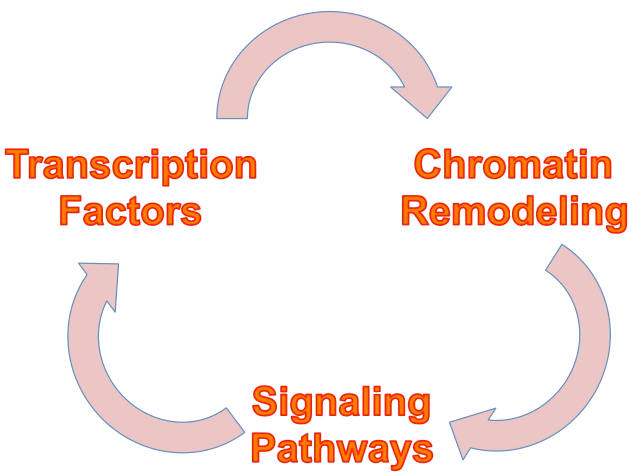
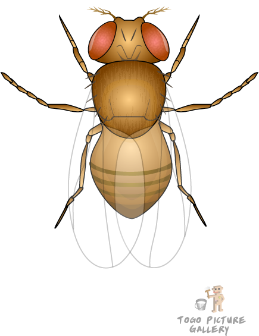
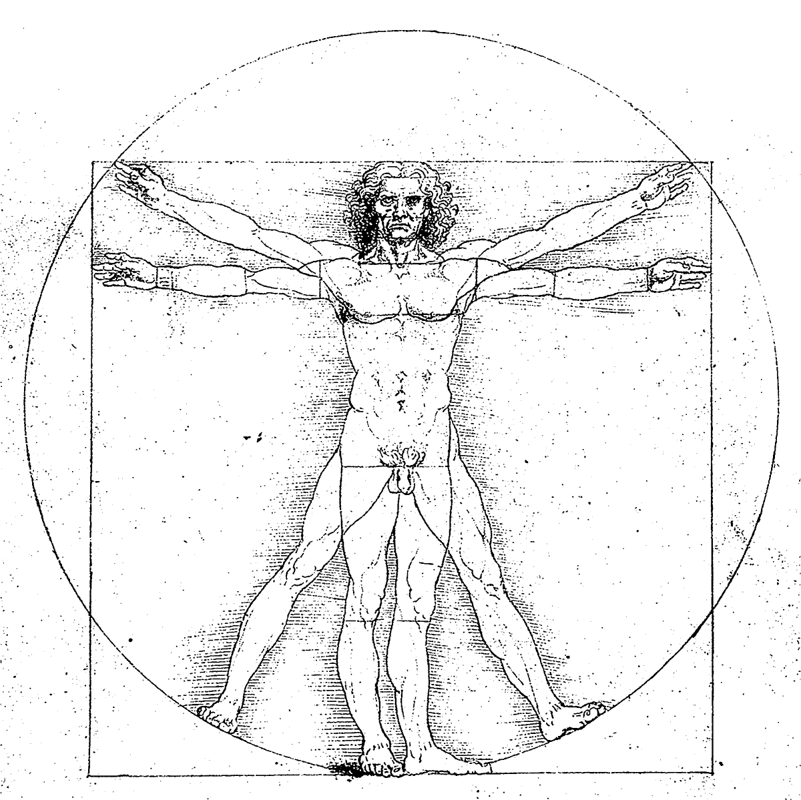
Essential Questions 2:
Morphogenesis
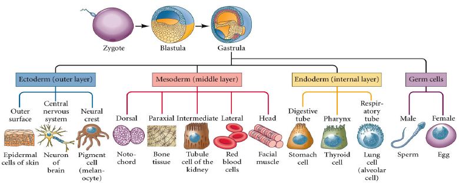Developmental Biology (Gilbert)
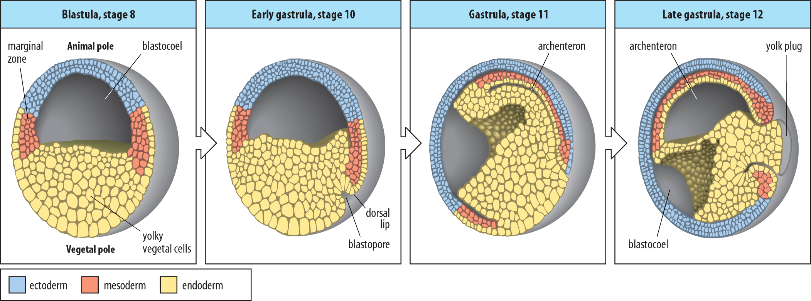
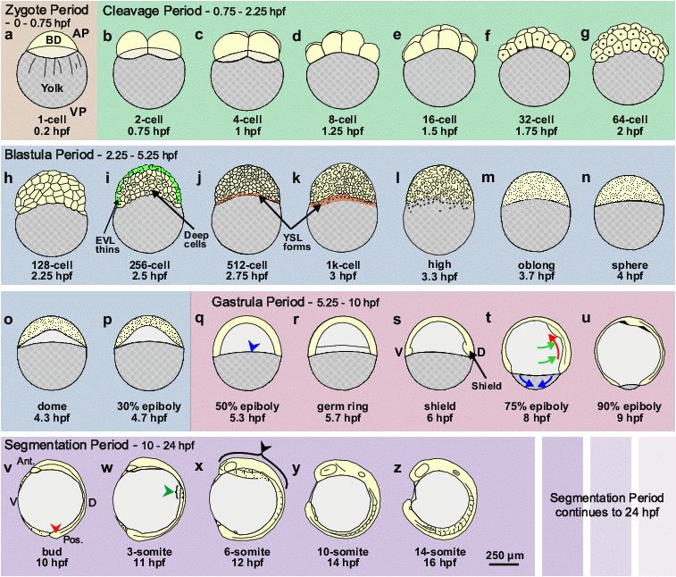
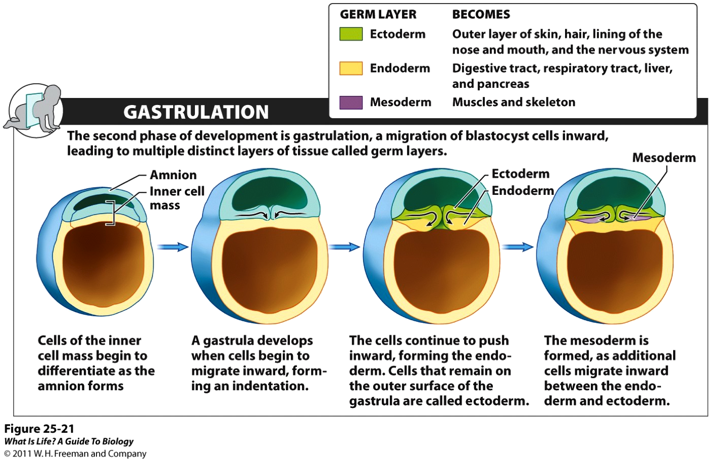
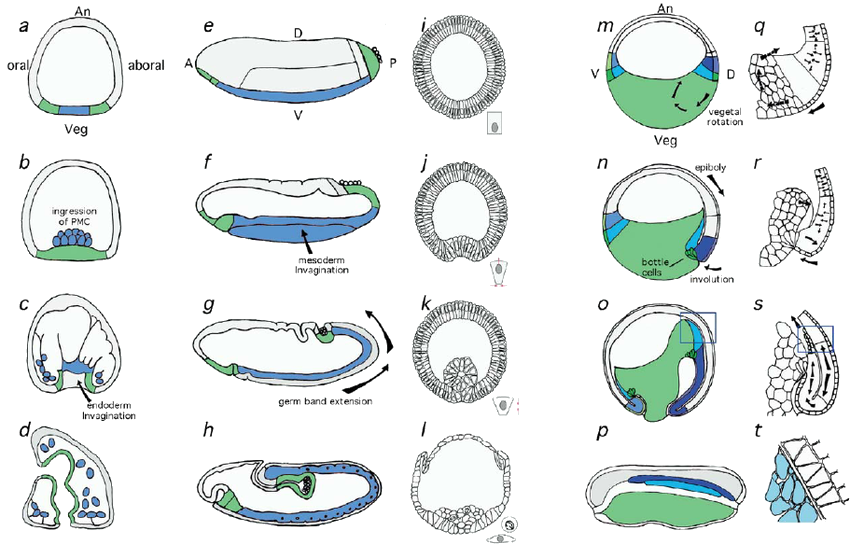
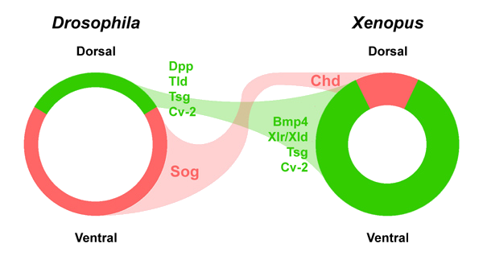

- convergent extension
- intercalation
- columnarization
- apical constriction
Morphogenesis during neurulation in live embryos (Zebrafish)
Syndromes associated with Sonic Hedgehog (mutations in the Shh gene)
Neural Crest Defects
| Disease | Description |
|---|---|
| DiGeorge syndrome | Defects in heart, palate, thymus, facial features; learning disabilities |
| Treacher-Collins syndrome | Hypoplasia of facial bones, defects in ear development and eye function, cleft palate |
| CHARGE syndrome | Defects in CNS, heart, hearing; growth and/or developmental retardation; genital and urinary tract defect |
| Waardenburg syndrome | Hearing loss; eye and hair pigment abnormality |
| Hirschsprung's disease | Intestinal aganglionosis |
| Congenital heart disease | Outflow tract defects are common |
| Familial dysautonomia | Problems with formation and function of parasympathetic and sympathetic neurons |
| Pediatric and adult cancer | Examples include neuroblastoma and melanoma |
| Piebaldism | Pigment defects as a result of problems with melanocyte formation |
| Axenfeld-Rieger syndrome | Glaucoma; malformations of eye, teeth and skeleton |
| Goldenhar syndrome | Malformation of palate, ear, nose, lip and jaw |
THANK YOU!